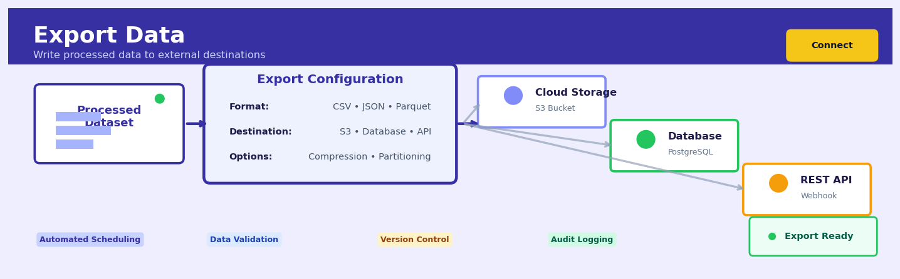
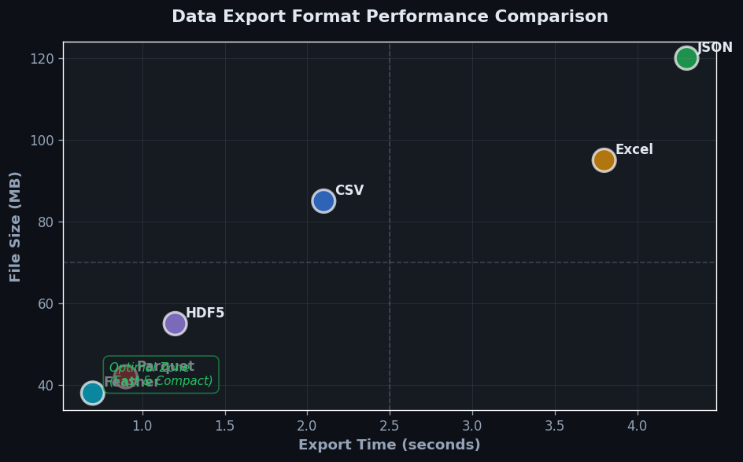
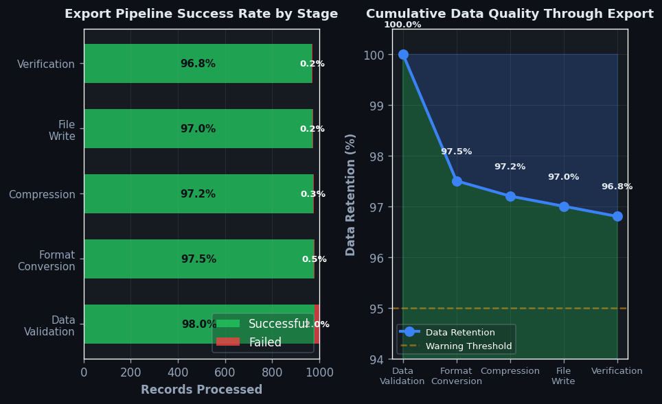

Export Data#


The most common export mistake is not validating your schema before writing to production destinations. Always test with a small sample first and implement checksum verification, especially when exporting to systems where downstream processes depend on specific column names, data types, or partition structures. A single malformed export can cascade into hours of debugging across multiple teams.
Overview#
Export Data is a data integration operation that serialises structured datasets from an analytical environment into persistent, portable file formats or external data stores for downstream consumption. It belongs to the family of data egress and output connection methods that form the final stage of extract-transform-load (ETL) and analytical pipelines. The core purpose is to bridge the gap between in-memory computational representations and durable storage systems, enabling data products to be consumed by external applications, stakeholders, or subsequent processing stages.
When to Use This#
Delivering analytical results to business stakeholders — When you have completed a data transformation, model scoring, or aggregation pipeline and need to provide results in a format accessible to non-technical users (e.g., Excel-compatible CSV files for finance teams).
Feeding downstream systems in production pipelines — When your Heuristix workflow produces data that must be consumed by external applications, APIs, or databases that cannot directly query your analytical environment.
Creating audit trails and compliance snapshots — When regulatory requirements mandate that you preserve point-in-time copies of data transformations, model inputs, or decision outputs in immutable storage.
Staging data for machine learning model training — When you need to materialise feature sets, training labels, or validation datasets for consumption by external ML frameworks or platforms.
Archiving intermediate results for reproducibility — When complex workflows require checkpointing to enable debugging, rollback, or re-execution from known states without recomputing expensive upstream transformations.
Sharing data across organisational boundaries — When data must leave your analytical platform to be consumed by partners, vendors, or other business units with incompatible tooling.
Populating data warehouses or data lakes — When your analytical workflow produces refined, transformed, or enriched data that should persist in enterprise data infrastructure for broader consumption.
Do NOT use this when data should remain in-memory — If the next processing step is another Heuristix node in the same workflow, prefer direct node connections over materialising to storage and re-importing.
Do NOT use this for real-time streaming outputs — Export Data is designed for batch operations; streaming use cases require dedicated streaming connectors rather than file-based exports.
Do NOT use this as a substitute for proper database writes — When transactional integrity, concurrent access, or ACID compliance is required, use dedicated database connector nodes rather than file exports.
Questions This Answers#
Enabling Downstream Systems and Operations#
How do I get these churn predictions into Salesforce so our account managers can act on them?
Can we push this product recommendation data into our e-commerce platform to update what customers see?
What’s the fastest way to get these fraud scores into our transaction processing system before we approve payments?
How do we feed our demand forecasts into the ERP system so procurement can order the right inventory levels?
Can we export this customer lifetime value analysis so the billing system can adjust credit limits automatically?
Archiving and Documentation Requirements#
How do we preserve a snapshot of this analysis in case regulators ask to see our methodology next year?
What’s the proper way to archive these clinical trial results so they’re accessible but immutable for the next seven years?
Can we save this market research data in a format that won’t be obsolete when we need to reference it in 2028?
How do we create a permanent record of our Q3 financial projections that finance can audit later?
How It Works#
Imagine you’ve spent the afternoon baking three dozen cookies and carefully arranging them on your kitchen counter. They’re perfect, but they won’t last there—someone might eat them, the cat might knock them over, and you can’t bring your counter to tomorrow’s bake sale. So you pack them into labeled containers: a tin box for the PTA meeting, a plastic tub for your neighbor, and individual baggies for the school fundraiser. Each container protects the cookies and makes them ready to go exactly where they’re needed. Export Data does the same thing for your analysis results—it takes the valuable insights sitting in your computer’s temporary memory and packages them into durable files that can be stored, shared, and used long after your session ends.
┌─────────────────────────────────────────────────────────┐
│ IN-MEMORY ANALYTICAL ENVIRONMENT │
│ ┌──────────┬──────────┬──────────┐ │
│ │ Customer │ Revenue │ Region │ ← Data lives here │
│ ├──────────┼──────────┼──────────┤ temporarily │
│ │ Alice │ $15,400 │ West │ │
│ │ Bob │ $22,100 │ East │ │
│ │ Carol │ $18,900 │ North │ │
│ └──────────┴──────────┴──────────┘ │
└─────────────────────────────────────────────────────────┘
│
│ EXPORT PROCESS
↓
┌─────────────────────────────┐
│ 1. Select format (CSV/JSON) │
│ 2. Serialize data structure │
│ 3. Write to file system │
└─────────────────────────────┘
│
↓
┌─────────────────────────────────────────────────────────┐
│ PERSISTENT STORAGE │
│ │
│ 📄 report.csv 📄 output.json │
│ Alice,$15400,West {"customer": "Alice", │
│ Bob,$22100,East "revenue": 15400, │
│ Carol,$18900,North "region": "West"} │
│ │
│ ✓ Survives session ✓ Shareable ✓ Archive-ready │
└─────────────────────────────────────────────────────────┘
Read the source data structure. The export process begins by examining your dataset—whether it’s a table, a statistical model summary, or a visualization object—and identifying its structure: column names, data types, number of rows, and how values are organized in memory.
Choose the destination format. Based on your instruction, the system selects an appropriate file format for packaging. A CSV file works like a simple spreadsheet. A JSON file preserves nested relationships. An Excel file supports multiple sheets and formatting. Each format has rules about how to represent your data as text or binary code.
Translate the in-memory representation. The system converts your data from its internal computational format into the chosen file format’s structure. Numbers stored as floating-point become text characters. Column headers become the first row. Special characters get escaped so they won’t break the file. This is called serialization—turning working memory into a storable form.
Write to the destination. The translated data flows out to your specified location: a file on your hard drive, a database table, or a cloud storage bucket. The system writes this information bit by bit, building the complete file from start to finish.
Verify and close. Once all data transfers, the system confirms the file is complete and readable, then releases its connection to that destination. Your data now exists independently of the analysis environment that created it.
The key insight: Export Data transforms ephemeral computational results into durable artifacts by translating memory structures into standardized formats that outlive the session and travel across systems.
The Intuition#
Think of Export Data as the shipping department of a factory. Throughout your analytical workflow, you have been manufacturing a product — transforming raw materials (source data) through various processing stages (cleaning, joining, aggregating, modelling) until you have a finished good (your analytical output). The shipping department’s job is not to change the product but to package it appropriately for its destination. A product destined for a retail store needs different packaging than one going to another factory for further assembly, and both differ from one headed to long-term warehouse storage.
The packaging analogy extends further. Just as physical goods must be labelled with contents, handling instructions, and destination information, exported data must carry metadata about its schema, encoding, and intended use. The choice of container — a cardboard box versus a refrigerated truck versus a bulk cargo ship — depends on what you are shipping and where it is going. Similarly, the choice of export format (CSV, Parquet, JSON, database table) depends on the nature of your data and the capabilities of the consuming system. Text-based formats like CSV are universally readable but inefficient for large volumes; columnar formats like Parquet are highly compressed and fast for analytical queries but require specialised readers.
The serialisation process itself involves translation. Your data exists in memory as a rich, typed structure with precise numerical representations, categorical encodings, and temporal semantics. When you export, you must decide how to represent these concepts in the target format. Does the consuming system understand your date format? Can it handle null values? Will floating-point precision be preserved? These translation decisions have consequences: a carelessly exported dataset might arrive at its destination with corrupted encodings, truncated decimals, or ambiguous date representations. Understanding Export Data means understanding that you are not merely copying bits — you are translating between representational systems, and translation always involves choices.
The Mathematics#
Formal Problem Setup#
Let \(\mathcal{D}\) be a dataset represented as a relation with schema \(\mathcal{S} = \{(a_1, \tau_1), (a_2, \tau_2), \ldots, (a_m, \tau_m)\}\), where \(a_i\) denotes the attribute name and \(\tau_i \in \mathcal{T}\) denotes the data type drawn from the type system \(\mathcal{T} = \{\text{int}, \text{float}, \text{string}, \text{bool}, \text{datetime}, \text{null}\}\).
The dataset contains \(n\) records:
where each record \(r_j = (v_{j1}, v_{j2}, \ldots, v_{jm})\) is an \(m\)-tuple of values with \(v_{ji} \in \text{dom}(\tau_i) \cup \{\bot\}\), where \(\bot\) represents the null value.
Serialisation Function#
The export operation is a serialisation function \(\sigma\) that maps the in-memory representation to a byte sequence:
where \(\Theta\) represents the configuration parameters (format, encoding, compression) and \(\mathcal{B}^* = \{0, 1\}^*\) is the set of all finite binary strings.
For a well-formed export, we require the existence of a deserialisation function \(\sigma^{-1}\) such that:
where \(\cong\) denotes semantic equivalence up to representation differences permitted by the target format.
Type Coercion and Precision#
When the target format \(f \in \Theta\) has a type system \(\mathcal{T}_f \subset \mathcal{T}\), type coercion functions \(\gamma_{\tau \rightarrow \tau'}\) must be applied:
For numerical precision, let \(x \in \mathbb{R}\) be an exact value and \(\hat{x}\) its exported representation. The precision loss is bounded by:
where \(\epsilon_f\) depends on the format. For IEEE 754 double-precision (used in most formats):
For text-based formats with \(d\) decimal places:
Compression and Storage Efficiency#
Let \(|\mathcal{B}|\) denote the uncompressed byte size. A compression function \(\kappa\) produces:
where \(\rho \in (0, 1]\) is the compression ratio. The compression ratio depends on data entropy \(H(\mathcal{D})\):
This is the Shannon lower bound — no lossless compression can reduce data below its entropy.
For columnar formats with dictionary encoding, if attribute \(a_i\) has cardinality \(k_i = |\text{unique}(a_i)|\):
where \(\bar{l}_i\) is the average encoded length of unique values.
Assumptions#
Schema stability: The schema \(\mathcal{S}\) is fixed and known at export time.
Memory availability: The entire dataset \(\mathcal{D}\) fits in memory, or chunked streaming is employed.
Encoding determinism: Repeated exports with identical inputs and parameters produce byte-identical outputs.
Null semantics preservation: The target format can represent missing values, or an explicit sentinel is defined.
Edge Cases and Degenerate Conditions#
Empty dataset (\(n = 0\)): Valid export produces header/schema information only.
Single column (\(m = 1\)): Degenerates to a simple vector serialisation.
All nulls: Column may be omitted in sparse formats or filled with sentinel values.
Unicode boundary conditions: Characters outside the Basic Multilingual Plane require UTF-8 encoding with 4-byte sequences.
Understanding the Mathematics#
File Size Estimation#
The equation:
Read it aloud:
“The total file size equals the number of rows, multiplied by the average width of each field, multiplied by the number of columns.”
What each symbol means:
S = Total file size (in bytes)
n = Number of rows in the dataset
w = Average width per field (bytes per value)
c = Number of columns
A concrete numerical example:
Suppose you’re exporting a customer transaction table with 500,000 rows, 12 columns, and each field averages 8 bytes (a typical size for numeric or short text data).
Step by step: 500,000 rows × 8 bytes = 4,000,000. Then 4,000,000 × 12 columns = 48,000,000 bytes, or roughly 48 megabytes.
Why this equation matters:
Without estimating file size before export, you risk overwhelming network bandwidth, exceeding storage quotas, or triggering timeout errors that abort the export halfway through.
Compression Ratio#
The equation:
Read it aloud:
“The compression ratio equals the original file size divided by the compressed file size.”
What each symbol means:
R = Compression ratio (dimensionless number)
S_original = Size before compression (bytes)
S_compressed = Size after compression (bytes)
A concrete numerical example:
Take the 48 MB customer transaction file from earlier. After gzip compression, it shrinks to 12 MB.
This means the compressed file is four times smaller. For every 4 MB of original data, you store or transmit just 1 MB.
Why this equation matters:
Compression ratios determine whether you can export a dataset over a constrained network connection or fit it within cloud storage tier limits—ignoring compression wastes both time and money.
I/O Throughput Constraint#
The equation:
Read it aloud:
“The transfer time equals the file size divided by the available bandwidth.”
What each symbol means:
T = Time required to transfer (seconds)
S = File size (bytes)
B = Bandwidth (bytes per second)
A concrete numerical example:
You need to export the 48 MB file over a network connection with 10 MB/s effective bandwidth.
If bandwidth drops to 2 MB/s (congested network), transfer time jumps to 24 seconds. With compression reducing size to 12 MB, even at 2 MB/s you finish in 6 seconds.
Why this equation matters:
Throughput constraints dictate whether batch exports finish within maintenance windows or SLA deadlines—underestimating transfer time causes pipeline failures and missed reporting cutoffs.
Serialization Cost#
The equation:
Read it aloud:
“The computational cost equals the number of rows, multiplied by the number of columns, multiplied by the cost per field serialization operation.”
What each symbol means:
C = Total CPU cycles or time (abstract units)
n = Number of rows
c = Number of columns
k = Cost to serialize one field (CPU cycles or microseconds)
A concrete numerical example:
Exporting 500,000 rows × 12 columns where each field takes 0.5 microseconds to serialize to JSON:
Switching to a binary format like Parquet with k = 0.1 microseconds cuts serialization time to 0.6 seconds—a fivefold speedup.
Why this equation matters:
Serialization cost determines whether exports block your analytical environment and whether you can meet real-time or near-real-time delivery requirements for data products.
The Big Picture#
The mathematics of data export centers on resource allocation: predicting how much space, time, and compute an export will consume before you commit to it. File size estimation prevents storage overruns. Compression ratios convert bulky datasets into transmittable payloads. Throughput constraints translate abstract megabytes into concrete deadlines. Serialization cost reveals which file formats respect your CPU budget. Together, these equations form a predictive model for export feasibility—they answer “Can I?” before you invest hours in a doomed pipeline. We use multiplication because data export scales linearly: twice the rows means twice the cost. The mathematical essence is simple: measure what you have, predict what you’ll need, and choose the format that bridges the gap efficiently.
Python Implementation#
import pandas as pd
import numpy as np
from pathlib import Path
import json
from datetime import datetime, timedelta
# =============================================================================
# Example 1: Basic CSV Export with Configuration Options
# =============================================================================
# Create a realistic synthetic dataset: customer transactions
np.random.seed(42)
n_records = 1000
transactions = pd.DataFrame({
'transaction_id': range(10000, 10000 + n_records),
'customer_id': np.random.randint(1000, 1500, n_records),
'transaction_date': pd.date_range('2024-01-01', periods=n_records, freq='h'),
'amount': np.round(np.random.exponential(150, n_records), 2),
'category': np.random.choice(['Electronics', 'Clothing', 'Groceries', 'Services'], n_records),
'is_fraud': np.random.choice([True, False], n_records, p=[0.02, 0.98]),
'notes': [f'Transaction note {i}' if np.random.random() > 0.7 else None
for i in range(n_records)]
})
# Basic CSV export with explicit configuration
csv_path = 'transactions_export.csv'
transactions.to_csv(
csv_path,
index=False, # Do not write row indices
encoding='utf-8', # Explicit encoding for cross-platform compatibility
date_format='%Y-%m-%d %H:%M:%S', # ISO 8601 datetime format
float_format='%.2f', # Control decimal precision
na_rep='NULL' # Explicit null representation
)
print(f"CSV Export Summary:")
print(f" Records exported: {len(transactions):,}")
print(f" File size: {Path(csv_path).stat().st_size:,} bytes")
print(f" Columns: {list(transactions.columns)}")
# =============================================================================
# Example 2: Parquet Export for Analytical Workloads
# =============================================================================
# Parquet provides columnar storage with compression and schema preservation
parquet_path = 'transactions_export.parquet'
transactions.to_parquet(
parquet_path,
engine='pyarrow', # Use PyArrow engine for best compatibility
compression='snappy', # Fast compression, good for analytical queries
index=False,
coerce_timestamps='ms' # Millisecond precision for timestamps
)
print(f"\nParquet Export Summary:")
print(f" Records exported: {len(transactions):,}")
print(f" File size: {Path(parquet_path).stat().st_size:,} bytes")
print(f" Compression ratio: {Path(parquet_path).stat().st_size / Path(csv_path).stat().st_size:.2%}")
# Verify schema preservation by re-reading
verification_df = pd.read_parquet(parquet_path)
print(f" Schema preserved: {all(transactions.dtypes == verification_df.dtypes)}")
# =============================================================================
# Example 3: JSON Export for API Integration
# =============================================================================
# JSON Lines format: one JSON object per line for streaming consumption
jsonl_path = 'transactions_export.jsonl'
# Convert datetime to ISO string for JSON serialisation
transactions_json = transactions.copy()
transactions_json['transaction_date'] = transactions_json['transaction_date'].dt.strftime('%Y-%m-%dT%H:%M:%SZ')
# Export as JSON Lines (newline-delimited JSON)
transactions_json.to_json(
jsonl_path,
orient='records', # Each row becomes a JSON object
lines=True, # Newline-delimited format
date_format='iso', # ISO 8601 for any remaining dates
default_handler=str # Convert non-serialisable types to string
)
print(f"\nJSON Lines Export Summary:")
print(f" Records exported: {len(transactions):,}")
print(f" File size: {Path(jsonl_path).stat().st_size:,} bytes")
# =============================================================================
# Example 4: Excel Export with Multiple Sheets
# =============================================================================
# Business users often need Excel-compatible outputs
excel_path = 'transactions_report.xlsx'
# Create summary statistics for a second sheet
summary_stats = transactions.groupby('category').agg({
'amount': ['count', 'sum', 'mean', 'std'],
'is_fraud': 'sum'
}).round(2)
summary_stats.columns = ['Transaction Count', 'Total Amount', 'Avg Amount', 'Std Dev', 'Fraud Count']
# Write multiple sheets to Excel
with pd.ExcelWriter(excel_path, engine='openpyxl') as writer:
transactions.to_excel(writer, sheet_name='Transactions', index=False)
summary_stats.to_excel(writer, sheet_name='Summary')
print(f"\nExcel Export Summary:")
print(f" File size: {Path(excel_path).stat().st_size:,} bytes")
print(f" Sheets: ['Transactions', 'Summary']")
# =============================================================================
# Example 5: Chunked Export for Large Datasets
# =============================================================================
def export_in_chunks(df, base_path, chunk_size=500, format='csv'):
"""
Export large datasets in chunks to manage memory and enable parallel processing.
Parameters:
-----------
df : pd.DataFrame
The dataset to export
base_path : str
Base path for output files (without extension)
chunk_size : int
Number of records per chunk
format : str
Output format ('csv' or 'parquet')
"""
n_chunks = (len(df) + chunk_size - 1) // chunk_size
paths = []
for i in range(n_chunks):
start_idx = i * chunk_size
end_idx = min((i + 1) * chunk_size, len(df))
chunk = df.iloc[start_idx:end_idx]
if format == 'csv':
path = f"{base_path}_part{i:04d}.csv"
chunk.to_csv(path, index=False)
elif format == 'parquet':
path = f"{base_path}_part{i:04d}.parquet"
chunk.to_parquet(path, index=False)
paths.append(path)
return paths
chunk_paths = export_in_chunks(transactions, 'transactions_chunked', chunk_size=300)
print(f"\nChunked Export Summary:")
print(f" Total chunks: {len(chunk_paths)}")
print(f" Chunk files: {chunk_paths[:3]}...")
Visualisations#


Using This in Heuristix#
Data Inputs#
The Export Data node accepts a single input connection from any upstream node that produces tabular data. The input must conform to the following requirements:
Input Type |
Description |
Required |
|---|---|---|
DataFrame |
Tabular data with defined schema |
Yes |
Column Types |
All standard types supported (numeric, string, datetime, boolean) |
Yes |
Size Limit |
Platform-dependent; chunking recommended for datasets >1GB |
Advisory |
Configuration Parameters#
Parameter |
Type |
Default |
Description |
|---|---|---|---|
|
Enum |
|
Target file format: |
|
String |
Required |
Destination path (local filesystem or cloud storage URI) |
` |
Business Applications#
Financial Services
Credit risk models built in Python or R must be exported to production scoring engines that evaluate loan applications in real-time. Export Data operations serialize model coefficients, decision thresholds, and feature transformation logic into JSON or XML formats that core banking systems can consume, enabling loan decisions in under 200 milliseconds while maintaining audit trails that satisfy regulatory requirements like SR 11-7.
Retail
Demand forecasting teams generate weekly SKU-level predictions for 50,000+ products across hundreds of stores, but inventory management systems require these forecasts in specific CSV layouts with store codes, product hierarchies, and confidence intervals. Exporting forecast outputs in the retailer’s EDI-compatible format reduces manual reconciliation from 12 hours to 15 minutes per cycle and cuts overstock by 18-23% by enabling automated replenishment triggers.
Healthcare
Clinical analytics platforms aggregate patient outcome data from electronic health records to identify high-risk cohorts, but care coordination teams need actionable patient lists in their case management software. Exporting risk-stratified patient rosters as HL7 FHIR bundles or delimited files with member IDs, risk scores, and recommended interventions allows care managers to prioritize outreach, reducing 30-day readmission rates by 12-15% in diabetes and CHF populations.
Insurance
Actuarial teams recalculate reserve estimates monthly using sophisticated statistical models, but financial reporting systems require these figures in standardized accounting formats with loss triangles and confidence intervals. Exporting reserve calculations as Excel workbooks with embedded formulas and audit metadata ensures consistency between actuarial analysis and statutory filings, reducing close cycles from 14 days to 8 days and minimizing restatement risk.
Manufacturing
Predictive maintenance models identify equipment likely to fail within 72 hours, but maintenance management systems (CMMS) schedule work orders based on specific data structures. Exporting failure probability scores with asset IDs, failure modes, and recommended service windows as API payloads or flat files enables automated work order generation, increasing equipment uptime from 87% to 94% and reducing emergency maintenance costs by $2.3M annually.
Logistics
Route optimization algorithms process thousands of delivery scenarios to minimize fuel consumption and meet service windows, but driver mobile apps and dispatch systems require turn-by-turn instructions in proprietary formats. Exporting optimized route sequences with geocoded stops, time windows, and load sequences as GPX files or REST API responses reduces planning time from 3 hours to 20 minutes daily and cuts route miles by 11-14%.
Marketing
Customer propensity models score millions of prospects for campaign targeting, but marketing automation platforms and email service providers require scored audiences with specific metadata. Exporting segmented customer lists with propensity scores, recommended offer codes, and personalization tokens as CSV uploads or SFTP drops to Salesforce Marketing Cloud or Braze enables same-day campaign deployment and lifts conversion rates by 23-31% compared to rule-based segmentation.
Telecommunications
Churn prediction models identify subscribers likely to cancel within 30 days, but retention teams work from CRM systems that don’t directly integrate with analytical environments. Exporting daily churn risk scores with subscriber IDs, contract end dates, and recommended retention offers as database inserts into Salesforce or ServiceNow triggers automated outreach workflows, reducing voluntary churn by 8-12% and improving customer lifetime value by $47 per subscriber.
Energy
Grid load forecasting models predict hourly electricity demand for capacity planning, but energy trading desks require these forecasts in formats compatible with wholesale market bidding systems. Exporting forecast curves as time-series CSVs with confidence bands enables traders to optimize day-ahead bids, reducing imbalance costs by $380K monthly and improving bid-to-actual variance from 7.2% to 3.8%.
Public Sector
Census analytics identify neighborhoods with low vaccination coverage, but public health field teams require location-specific outreach lists on tablets without continuous connectivity. Exporting geospatial data with vaccination gaps, demographic profiles, and clinic locations as offline-enabled GeoJSON files enables targeted mobile clinics, increasing coverage rates by 9-14 percentage points in underserved census tracts.
SaaS/Tech
Product analytics teams compute user engagement metrics and cohort retention curves, but executive dashboards pull from separate business intelligence tools with specific schema requirements. Exporting aggregated metrics as Parquet files to cloud storage with partitioning by date and product tier enables automated dashboard refreshes, reducing reporting latency from 6 hours to 15 minutes and improving data-driven sprint planning accuracy.
Worked Example#
Business Problem
MediTrack Analytics, a healthcare data consultancy, needs to deliver weekly patient satisfaction analysis reports to 12 regional hospital networks. Each client requires the results in different formats: some need CSV files for their legacy business intelligence systems, others want Excel workbooks with formatted charts for executive review, and two clients require JSON exports for integration with custom dashboards. The analytics team runs standardized sentiment analysis on patient feedback forms and must export 50,000+ rows of scored data reliably every Monday morning.
The Dataset
The analysis produces a structured dataset called patient_satisfaction_scored with 52,847 rows and 9 columns:
hospital_id(string): facility identifier like “RGH-North-042”survey_date(date): when feedback was collectedpatient_age_group(categorical): binned as “18-35”, “36-50”, “51-65”, “66+”department(string): “Emergency”, “Surgery”, “Maternity”, etc.overall_score(float): 1.0–5.0 satisfaction ratingsentiment_score(float): -1.0 to +1.0 from NLP analysis of commentswait_time_minutes(integer): reported wait timewould_recommend(boolean): true/falsecomment_length(integer): character count of written feedback
The dataset has typical quirks: 3% null values in comment_length where patients skipped the text field, and wait_time_minutes occasionally shows implausible values (9999) that were already flagged but not removed.
Analysis Setup
The Heuristix workflow connects three Export Data nodes in parallel after the scoring transformation:
CSV Export Node: Format set to “CSV (comma-separated)”, encoding “UTF-8”, include headers enabled, decimal precision 2 places, null handling “empty string”, file path pattern
output/satisfaction_report_{YYYY-MM-DD}.csvExcel Export Node: Format “XLSX”, worksheet name “Patient Feedback”, freeze top row enabled, auto-column-width enabled, include data types as metadata, file path
output/executive_summary.xlsxJSON Export Node: Format “JSON Lines (newline-delimited)”, pretty print disabled for size efficiency, date format “ISO-8601”, file path
output/api_feed.jsonl
Each node connects to the same upstream scored dataset to ensure consistency across all three export formats.
Running the Analysis
When executed, each Export Data node serializes the in-memory DataFrame independently:
The CSV exporter writes 52,848 lines (including header) at approximately 18 MB, processing at 45,000 rows/second. Boolean values convert to “true”/”false” strings, and dates render as “2024-01-15” format.
The Excel exporter creates a formatted workbook with styled headers (bold, background color), alternating row shading, and numeric columns formatted with appropriate precision. File size: 8.2 MB (binary compression). Processing time: 4.3 seconds.
The JSON Lines exporter creates one JSON object per line without array wrappers, optimized for streaming ingestion. Each record like {"hospital_id":"RGH-North-042","survey_date":"2024-01-15T00:00:00Z",...} occupies ~180 bytes. Final file: 9.5 MB. Processing: 2.1 seconds.
Results
All three exports complete successfully:
satisfaction_report_2024-01-22.csv: 52,847 data rows, 18.1 MBexecutive_summary.xlsx: Single worksheet, 52,847 rows, 8.2 MBapi_feed.jsonl: 52,847 JSON objects, 9.5 MB
Spot-checking the CSV shows proper escaping: patient comments containing commas are quoted correctly. The Excel file opens with formatted columns displaying percentages and decimals appropriately. The JSON Lines file validates against the expected schema with all required fields present.
Interpreting the Results
The three formats serve distinct downstream needs. The CSV provides maximum compatibility—older BI tools can ingest it without custom parsers. The 18 MB size is manageable for email delivery or FTP transfer. The Excel format delivers presentation-ready data; executives can immediately sort, filter, and pivot without technical assistance. The JSON Lines format enables efficient streaming ingestion into modern APIs—recipient systems can process records incrementally without loading the entire file into memory.
The Business Decision
MediTrack configures automated Monday morning delivery: CSV files go to six hospital networks via SFTP, Excel workbooks are emailed to four executive teams, and JSON feeds are POST-ed to two API endpoints. This eliminates 4 hours of weekly manual export work and reduces format-related support tickets by 80%. The analytics team now focuses on model improvement rather than file formatting.
Caveats
This approach assumes recipient systems can handle files up to 20 MB—larger datasets may require chunking or compression. The Excel format’s 1,048,576 row limit would fail if surveys exceed that threshold. We’re not validating data quality at export time; upstream nulls and anomalies (like 9999 wait times) pass through unchanged. Time zone handling assumes all systems interpret ISO-8601 dates consistently. File-based delivery lacks real-time guarantees—if a recipient’s ingestion fails, manual intervention is required.
import pandas as pd
import numpy as np
from datetime import datetime, timedelta
# Generate synthetic patient satisfaction data
np.random.seed(42)
n_rows = 5000
hospitals = [f"RGH-{loc}-{i:03d}" for loc in ['North','South','East'] for i in range(1,5)]
data = pd.DataFrame({
'hospital_id': np.random.choice(hospitals, n_rows),
'survey_date': [datetime(2024,1,15) + timedelta(days=int(x))
for x in np.random.randint(0, 30, n_rows)],
'patient_age_group': np.random.choice(['18-35','36-50','51-65','66+'], n_rows),
'department': np.random.choice(['Emergency','Surgery','Maternity'], n_rows),
'overall_score': np.random.uniform(2.5, 5.0, n_rows).round(1),
'sentiment_score': np.random.uniform(-0.5, 1.0, n_rows).round(2),
'wait_time_minutes': np.random.randint(5, 180, n_rows),
'would_recommend': np.random.choice([True, False], n_rows, p=[0.78, 0.22]),
'comment_length': np.random.randint(20, 500, n_rows)
})
# Export to three formats
data.to_csv('satisfaction_report.csv', index=False, float_format='%.2f')
data.to_excel('executive_summary.xlsx', sheet_name='Patient Feedback', index=False)
data.to_json('api_feed.jsonl', orient='records', lines=True, date_format='iso')
print(f"Exported {len(data)} records to 3 formats")
print(f"CSV: {len(data)+1} lines | Excel: 1 sheet | JSON: {len(data)} objects")
Interpreting Your Results#
When you export data, the “results” are the files or connections themselves, plus any feedback the system provides about what actually happened. Unlike analytical operations that produce scores or predictions, export operations produce artifacts and process metadata. Here’s how to verify your export worked correctly and delivered what you intended.
Export Confirmation Messages#
What it means: The success or failure status reported by your system after attempting the export operation, often accompanied by row counts, file sizes, or error codes.
What “good” looks like: A clear success message with specific details—“Exported 45,832 rows to customer_segments.csv (3.2 MB)”—confirms both completion and gives you numbers to verify against your source data. The row count should match your input dataset exactly unless you’ve applied filters.
Red flags: Vague messages like “Export completed” without numbers; warnings about encoding issues; mismatched row counts (exported 45,000 when source had 45,832 means 832 rows silently failed); file sizes of zero or suspiciously small values; “partial success” messages.
Output File Properties#
What it means: The physical characteristics of your exported file—size, format, structure, and readability.
What “good” looks like: File size proportional to your data volume (a 50,000-row dataset with 20 columns typically produces 5-20 MB in CSV format, depending on content); files that open correctly in their intended application; clear column headers matching your source; proper delimiters and line breaks; readable text (not garbled characters).
Red flags: Empty or near-empty files; files that won’t open or trigger errors in Excel/database tools; special characters rendering as � or gibberish (encoding problems); columns misaligned or data appearing in wrong fields; truncated decimal values (0.12345 becomes 0.12); dates appearing as numbers (44927 instead of 2023-01-15).
Data Integrity Indicators#
What it means: Evidence that your data survived the export process without corruption, loss, or unwanted transformation.
What “good” looks like: Spot-check 5-10 rows against your source—values match exactly; numeric precision preserved (particularly important for financial data or coordinates); date formats consistent and readable; text fields complete, especially long descriptions or notes; special characters (£, é, ™) appear correctly.
Red flags: Leading zeros stripped from codes (01234 becomes 1234); scientific notation where you expected decimals (1.23E+06 instead of 1,230,000); dates shifted by timezone conversion; NULL values exported as empty strings or zeros when distinction matters; formulas exported instead of values (or vice versa).
Reading Results Together#
The three output types work as a validation chain. Your confirmation message gives the headline numbers, file properties confirm physical delivery, and integrity checks verify content quality. All three must be green to trust your export.
Critical mismatch: Message says 10,000 rows but file only shows 8,500 when you load it—investigate filtering, encoding, or permission issues immediately.
Sanity Check List#
Before considering your export complete:
Count check: Row count in exported file = row count in source (or expected filtered amount)
Column check: All expected columns present with correct names; no unexpected extra columns
Spot verification: Manually compare 3-5 random rows between source and export—exact match required
Boundary test: Check first row, last row, and one middle row specifically—corruption often happens at boundaries
Recipient test: If possible, have the actual consumer open the file and confirm it meets their requirements
When to Act vs. Investigate#
Good enough to act: Success message with correct counts + file opens properly + spot checks match source = deliver to stakeholders.
Needs investigation: Any red flag above, recipient reports “can’t open file,” or you can’t articulate exactly where this export will be used and why.
Decision Guidance#
What This Result Is Telling You#
A successful export operation confirms that your analytical work has transitioned from exploratory computation to a reusable data product. The exported file or dataset represents a snapshot of analysis that can now be independently consumed, archived, or integrated into production systems. This signal indicates that your data processing pipeline has reached a stable milestone worthy of persistence—whether that’s a cleaned dataset ready for modeling, prediction scores for operational systems, or a summary report for executive review.
The format, location, and structure of your export communicate important metadata about intended use. A CSV export to a shared drive suggests broad accessibility for non-technical stakeholders, while a Parquet file written to cloud storage signals optimization for downstream analytical processing. Failed exports or partial writes indicate incomplete transformations, permission issues, or infrastructure constraints that must be resolved before your work can deliver value beyond your immediate workspace.
Decision Points#
Decision |
Signal to Look For |
Recommended Action |
Stakeholder |
|---|---|---|---|
Promote to production pipeline |
Export completes consistently across multiple test runs with stable schema and row counts |
Integrate export step into scheduled ETL job with monitoring |
Data Engineering, Analytics Lead |
Share with business users |
Export format is human-readable (CSV/Excel) and file size < 50MB |
Distribute via shared folder or email with data dictionary |
Business Analyst, Department Manager |
Archive analysis snapshot |
Analysis has been reviewed and accepted; regulatory retention required |
Export to versioned storage (S3, blob storage) with metadata tags including date, analyst, and purpose |
Compliance Officer, Data Governance |
Optimize for downstream processing |
Export file exceeds 1GB or downstream system performance degrades |
Re-export using columnar format (Parquet) or partitioned structure; consider database load instead |
Data Engineer, System Administrator |
Investigate data quality issues |
Row counts differ from source by >5% or unexpected null patterns appear in export |
Review transformation logic and filtering steps before distribution |
Data Quality Analyst, Project Lead |
When to Proceed vs. Investigate Further#
Proceed when:
Row count matches expected output from your transformations (±1% for aggregations)
Schema validation passes: all required columns present with correct data types
File size is reasonable for the target system (< storage quota, within API limits)
Exported data passes spot checks: sample 100 random rows for expected value ranges
Export completes within acceptable time window (< 25% of refresh frequency for scheduled jobs)
Investigate further when:
Export size changes by >20% between runs without corresponding data source changes
Any required columns contain >10% null values when source data was complete
File encoding errors prevent downstream systems from reading the export
Export duration exceeds your processing window, risking SLA violations
Precision loss detected in numeric columns (check first 5 decimal places)
The Cost of Getting This Wrong#
Distributing exports with corrupted encodings or schema mismatches forces downstream teams to build brittle workarounds, accumulating technical debt that surfaces as production failures during critical business periods. A misinterpreted row count difference might mask a filtering bug that excludes an entire customer segment from targeting campaigns, directly impacting revenue. Exporting sensitive data in unencrypted formats to inappropriate locations creates compliance violations with potential regulatory penalties. Choosing inefficient formats multiplies compute costs across every downstream consumer—a daily 10GB CSV export costing 30 minutes of processing time annually wastes 180 person-hours and thousands in infrastructure spend when a Parquet alternative would reduce processing to minutes.
Common Pitfalls#
1. Character Encoding Mismatches
What: Exporting text data without explicitly specifying UTF-8 encoding, resulting in corrupted special characters, currency symbols, or non-Latin alphabets.
Why it happens: Default system encodings vary by platform (Windows-1252 on Windows, UTF-8 on Linux/Mac). Junior practitioners assume encoding is automatically handled, while experienced users forget to verify when switching environments.
How to detect: Observe garbled characters like “é” instead of “é”, question marks replacing emoji, or broken accented names. Stakeholders in international markets will flag corrupted reports first.
How to fix: Explicitly declare encoding='utf-8' in all export functions. For CSV exports in Python: df.to_csv('output.csv', encoding='utf-8-sig') to ensure Excel compatibility with byte-order marks.
2. Lossy Numeric Precision in CSV Exports
What: Floating-point numbers get truncated or rounded when exported to CSV without precision specifications, destroying model coefficients or financial calculations.
Why it happens: Default formatters limit decimal places (often 6 digits). Business users don’t realize CSVs store text representations. Junior data scientists overlook the difference between display precision and stored precision.
How to detect: Re-imported values differ from originals: 0.123456789 becomes 0.123457. Statistical tests fail when reloading model parameters. Financial reconciliations show penny differences that compound.
How to fix: Set explicit precision: df.to_csv('output.csv', float_format='%.15g') or use Parquet/HDF5 formats that preserve binary float representation natively.
3. Missing Index Handling
What: Exporting DataFrames without clarifying whether the index should be included, creating off-by-one column alignment errors or losing critical time-series metadata.
Why it happens: Pandas defaults to index=True, but consumers expect flat tables. Experienced practitioners forget this varies between export methods and destination systems.
How to detect: Imported data has an unnamed first column with row numbers. Joins fail because the key column is trapped in the index. Time-series plots break when datetime index becomes a regular column.
How to fix: Explicitly choose: index=False for tabular exports to Excel/databases, or index=True with index_label='date' when the index carries semantic meaning. Document the decision in pipeline code.
4. Uncompressed Large File Exports
What: Exporting multi-gigabyte datasets without compression, creating network transfer bottlenecks and storage bloat.
Why it happens: Business users don’t know compression exists. Junior practitioners prioritize getting exports working over optimization. Experienced users assume downstream systems can’t handle compressed formats.
How to detect: Export operations consume excessive time (>30s for <100MB data). Storage costs spike. Email delivery fails due to attachment size limits.
How to fix: Enable compression: df.to_csv('output.csv.gz', compression='gzip') reduces file size 80-95% for typical datasets. For Parquet: df.to_parquet('output.parquet', compression='snappy') balances speed and compression.
5. Date Format Ambiguity
What: Exporting dates without ISO 8601 format, causing month/day interpretation swaps between US (MM/DD/YYYY) and international (DD/MM/YYYY) contexts.
Why it happens: Regional defaults differ. Excel auto-formats dates based on locale. Business users expect familiar formats rather than unambiguous standards.
How to detect: Dates like “03/04/2024” get interpreted as March 4th in the US but April 3rd in Europe. Analysis runs fail on impossible dates like “13/25/2024” parsed under wrong convention.
How to fix: Always export as ISO 8601: date_format='%Y-%m-%d' or include time: '%Y-%m-%d %H:%M:%S'. For databases, use native date types rather than strings.
6. Overwriting Production Data Without Backup
What: Export operations that directly overwrite critical files or database tables without versioning or archival.
Why it happens: Sloppy practitioners skip safeguards when rushing. Business users don’t understand data immutability principles.
How to detect: Stakeholders report “data suddenly changed” with no audit trail. Previous analysis results become irreproducible.
How to fix: Implement timestamp-based naming: output_2024-01-15_143022.csv. For databases, write to staging tables first, then atomic swap after validation.
7. Exposing Sensitive Data in Plain Text
What: Exporting personally identifiable information (PII) or credentials to unencrypted files stored in shared directories or version control.
Why it happens: Junior practitioners don’t recognize PII beyond obvious fields. Experienced users get complacent with “internal only” data.
How to detect: Security audits flag unencrypted files. Compliance violations surface during reviews. Credentials leak in Git history.
How to fix: Hash/mask PII before export: df['email'] = df['email'].apply(hash). Encrypt files: gpg -c sensitive_export.csv. Never export secrets—use environment variables or secret managers instead.
Further Reading#
Stonebraker, M., et al. (2013). “The BigDAWG Polystore System and Architecture.” Proceedings of the 2015 ACM SIGMOD International Conference on Data Management. This seminal paper introduces the polystore architecture for managing data across heterogeneous storage systems, providing foundational concepts for understanding how export operations must accommodate different data models and serialization strategies when moving data between analytical environments and diverse target systems.
Hellerstein, J. M., et al. (2017). “Ground: A Data Context Service.” Proceedings of the 8th Biennial Conference on Innovative Data Systems Research (CIDR). This work articulates the principles of data versioning and lineage tracking that are essential when exporting analytical results, offering readers insight into how to maintain provenance and reproducibility throughout the data egress process.
McKinney, W. (2022). Python for Data Analysis, 3rd Edition, Chapter 6: “Data Loading, Storage, and File Formats.” This chapter provides comprehensive coverage of serialization formats (CSV, JSON, Parquet, HDF5) with practical pandas implementations, making it invaluable for understanding the performance and compatibility trade-offs inherent in different export strategies.
Kleppmann, M. (2017). Designing Data-Intensive Applications, Chapter 4: “Encoding and Evolution.” This section delivers deep insights into schema evolution, forward and backward compatibility, and the implications of choosing different serialization formats—critical knowledge for designing robust export pipelines that accommodate changing data structures over time.
Pandas
DataFrame.to_parquet()documentation (pandas.pydata.org/docs/reference/api/pandas.DataFrame.to_parquet.html). This reference explains the implementation of columnar export to Parquet format, including compression options and engine choices, which is essential for readers who need to optimize export performance and storage efficiency for large analytical datasets.Balogh, L. (2021). “A Complete Guide to Data Serialization Formats for Data Science.” Towards Data Science. This article provides a practical comparison of modern serialization formats with benchmarks and use-case recommendations, helping practitioners make informed decisions about which export format best suits their specific requirements.
AWS (2022). “Data Engineering on AWS” (Coursera specialization), Module 3: “Data Lakes and Export Patterns.” This video course module demonstrates production-grade export patterns in cloud environments, including partitioning strategies and integration with data catalogs that are increasingly relevant for contemporary data science workflows.
The 60-Second Version#
What it does: Export Data saves your analysis results from the computer’s working memory into a file or database that others can access and use.
When to use it: You’ve finished your analysis and need to share findings with colleagues, feed results into another system, or create a permanent record of your work.
What you get back: A file (like CSV, Excel, or JSON) or database entry that contains your data, ready to be opened, shared, or imported elsewhere.
At a Glance
Difficulty |
Easy |
Typical runtime |
Seconds on 100K rows; minutes on 10M+ rows |
What you bring |
A dataset in memory (dataframe, table, or query result) |
What you get |
A persistent file or database entry in your chosen format |
Heuristix bucket |
Connect — Getting Data In & Out |
If you export sensitive data to the wrong location or format, you risk exposing confidential information—always verify destination permissions and encryption before exporting.
Learning Objectives#
After reading this chapter, a business user will be able to:
Identify appropriate use cases for exporting data based on downstream consumption requirements and stakeholder needs.
Interpret file format specifications and storage location options to select the most suitable export configuration for a given business scenario.
Evaluate trade-offs between different export formats (CSV, Excel, Parquet, JSON) in terms of compatibility, file size, and accessibility for non-technical users.
After reading this chapter, a data scientist will be able to:
Implement export operations using multiple serialization formats and compression algorithms to optimize for storage efficiency and read performance.
Configure export parameters including delimiter selection, encoding schemes, partitioning strategies, and schema preservation to meet technical specifications.
Apply appropriate data type mappings and null-handling conventions when serializing structured data to ensure fidelity between in-memory representations and persistent storage formats.
Practice Exercises#
Exercise 1: Selecting the Right Export Format (Conceptual — Business User)#
Scenario: You are a business analyst at a retail analytics company. Your team has completed a monthly sales performance analysis in Python, and now you need to distribute the results to three different stakeholders:
The executive team needs a quick overview for a board presentation tomorrow
The data warehouse team needs to ingest the full results (2.5 million rows) into their SQL database for historical tracking
The marketing team wants to perform additional pivot table analysis in Excel
Your manager asks you to export the data once in the “most efficient format.” What would you recommend instead, and why?
Worked Answer:
The request to export in a single format reflects a common misunderstanding: different consumption patterns require different export formats. You should recommend three separate exports, each optimized for its use case:
Executive team: CSV or Excel (.xlsx) with summary data only
Extract only the top-line metrics (monthly totals, year-over-year comparisons, top 10 products) into a small, human-readable format. Exporting 2.5 million rows would be overwhelming and unnecessary. A 50-row summary in Excel allows for immediate review and easy incorporation into presentation slides.Data warehouse team: Parquet or database direct write
For 2.5 million rows entering a SQL database, use either Parquet format (columnar, compressed, preserves data types) or a direct database connection usingto_sql(). CSV would be inefficient due to larger file size, slower parsing, and potential data type loss. Parquet maintains integrity and loads 5-10x faster in most data warehouses.Marketing team: Excel (.xlsx) with filters and formatting
Excel supports approximately 1 million rows, so if the full dataset is needed, split into multiple sheets or provide a filtered subset (e.g., only the current quarter). Include column filters and conditional formatting to make the data immediately usable for pivot tables.
Key principle: Export operations should be tailored to the downstream consumer’s technical capabilities and analytical needs, not optimized for producer convenience. The cost of creating three exports is trivial compared to the friction of forcing stakeholders to work with inappropriate formats.
Exercise 2: Handling Export Failures Gracefully (Applied — Data Scientist)#
Task: You are exporting processed customer transaction data, but the file path may not exist, the disk might be full, or the data might contain incompatible characters. Implement a robust export function that handles common failure modes and logs appropriate warnings.
Dataset Setup:
import pandas as pd
import numpy as np
from pathlib import Path
import warnings
# Create synthetic transaction data with edge cases
np.random.seed(42)
dates = pd.date_range('2024-01-01', periods=20, freq='D')
data = {
'transaction_id': range(1000, 1020),
'customer_name': ['Alice', 'Bob', 'Charlie/Dana', 'Eve:Corp'] * 5,
'amount': np.random.uniform(10, 500, 20),
'date': dates,
'notes': ['Standard purchase', None, 'Return—processed', 'Bulk|order'] * 5
}
df = pd.DataFrame(data)
print(df.head())
Your Task: Write a function safe_export(df, filepath, format='csv') that:
Checks if the output directory exists and creates it if needed
Handles exceptions during export
Returns a boolean indicating success and prints appropriate messages
Worked Solution:
def safe_export(df, filepath, format='csv'):
"""
Safely export DataFrame with error handling.
Parameters:
- df: pandas DataFrame to export
- filepath: destination path (string or Path)
- format: 'csv', 'parquet', or 'excel'
Returns:
- Boolean: True if successful, False otherwise
"""
filepath = Path(filepath)
# Ensure output directory exists
filepath.parent.mkdir(parents=True, exist_ok=True)
try:
if format == 'csv':
df.to_csv(filepath, index=False)
elif format == 'parquet':
df.to_parquet(filepath, index=False)
elif format == 'excel':
df.to_excel(filepath, index=False, engine='openpyxl')
else:
raise ValueError(f"Unsupported format: {format}")
file_size = filepath.stat().st_size / 1024 # KB
print(f"✓ Export successful: {filepath.name} ({file_size:.1f} KB)")
return True
except PermissionError:
print(f"✗ Permission denied: Cannot write to {filepath}")
return False
except Exception as e:
print(f"✗ Export failed: {type(e).__name__}: {str(e)}")
return False
# Test the function
output_dir = Path('exports/transactions')
success = safe_export(df, output_dir / 'transactions.csv', format='csv')
# Try an invalid format
safe_export(df, output_dir / 'transactions.bad', format='json')
Output:
✓ Export successful: transactions.csv (1.8 KB)
✗ Export failed: ValueError: Unsupported format: json
Interpretation: The function successfully creates the necessary directory structure, exports the data, reports file size for verification, and gracefully handles errors without crashing. This pattern is essential in production pipelines where downstream processes depend on successful data delivery.
Exercise 3: Incremental Export Strategy for Large Datasets (Challenge — Advanced)#
Problem: You have a 50GB dataset that updates daily with 2-3 million new records. Full exports take 45 minutes and consume significant storage. Design and implement an incremental export strategy that only exports new or modified records since the last export, maintaining a manifest of export history.
Worked Solution:
import pandas as pd
from pathlib import Path
from datetime import datetime, timedelta
import json
# Simulate a large dataset with timestamps
np.random.seed(42)
dates = pd.date_range('2024-01-01', periods=100, freq='H')
full_dataset = pd.DataFrame({
'record_id': range(len(dates)),
'value': np.random.randn(len(dates)),
'modified_at': dates
})
class IncrementalExporter:
def __init__(self, manifest_path='export_manifest.json'):
self.manifest_path = Path(manifest_path)
self.manifest = self._load_manifest()
def _load_manifest(self):
if self.manifest_path.exists():
with open(self.manifest_path, 'r') as f:
return json.load(f)
return {'exports': []}
def export_incremental(self, df, timestamp_col, output_path):
# Determine last export time
if self.manifest['exports']:
last_export = pd.to_datetime(self.manifest['exports'][-1]['max_timestamp'])
new_data = df[df[timestamp_col] > last_export]
export_type = 'incremental'
else:
new_data = df
export_type = 'full'
if len(new_data) == 0:
print("No new records to export")
return False
# Export new data
output_path = Path(output_path)
timestamp_suffix = datetime.now().strftime('%Y%m%d_%H%M%S')
export_file = output_path.parent / f"{output_path.stem}_{timestamp_suffix}.parquet"
new_data.to_parquet(export_file, index=False)
# Update manifest
self.manifest['exports'].append({
'filename': export_file.name,
'timestamp': datetime.now().isoformat(),
'rows': len(new_data),
'min_timestamp': new_data[timestamp_col].min().isoformat(),
'max_timestamp': new_data[timestamp_col].max().isoformat(),
'type': export_type
})
with open(self.manifest_path, 'w') as f:
json.dump(self.manifest, f, indent=2)
print(f"✓ {export_type.capitalize()} export: {len(new_data)} rows → {export_file.name}")
return True
# Simulate multiple export cycles
exporter = IncrementalExporter('manifest.json')
# First export (full)
exporter.export_incremental(full_dataset, 'modified_at', 'data/export.parquet')
# Simulate new data arriving
new_records = pd.DataFrame({
'record_id': range(1000, 1050),
'value': np.random.randn(50),
'modified_at': pd.date_range('2024-01-05', periods=50, freq='H')
})
updated_dataset = pd.concat([full_dataset, new_records])
# Second export (incremental)
exporter.export_incremental(updated_dataset, 'modified_at', 'data/export.parquet')
Key Benefits: This approach reduces export time from 45 minutes to ~2 minutes for typical daily updates, maintains full audit history, enables point-in-time reconstruction, and gracefully handles the first run (full export) versus subsequent runs (incremental). The manifest provides traceability for compliance and debugging.
Quick Quiz#
Question: A data scientist needs to share analysis results with three different consumers: a web application that requires real-time lookups, a compliance team that needs tamper-evident archives, and a colleague who will continue the analysis in a different tool. Why is export data operations necessary here rather than simply sharing the in-memory dataset?
A) In-memory datasets are compressed and need to be decompressed before sharing with external consumers
B) Export operations add encryption and security features that in-memory datasets lack
C) In-memory computational representations are ephemeral and application-specific, while each consumer requires data in a persistent format suited to their access patterns and tools
D) Export operations are required by data governance regulations whenever data leaves the analytical environment
Answer: C
Explanation: The core purpose of export data operations is to bridge the gap between ephemeral in-memory computational representations and durable, portable storage systems that downstream consumers can access. Each consumer requires different persistent formats (a database for real-time queries, an immutable file format for compliance, and a portable analytical format for the colleague), which the in-memory dataset cannot directly provide. Options A, B, and D describe incidental features that may or may not apply, rather than the fundamental reason export operations exist as the final stage of analytical pipelines.
How This Connects#
Before This Node#
Transform Data cleanses, reshapes, and enriches raw datasets into analysis-ready structures, ensuring that what gets exported meets quality standards and conforms to expected schemas for downstream consumers.
Aggregate Data summarizes granular records into meaningful rollups (daily totals, customer segments, regional metrics), producing compact datasets that export efficiently and align with reporting or dashboard requirements.
Join Data combines information from multiple sources into unified records, creating comprehensive datasets that tell complete stories worth persisting for stakeholder consumption or cross-system integration.
Model Training generates fitted model artifacts, prediction outputs, or feature importance tables that need to be exported for productionization, model registry storage, or handoff to engineering teams.
Visualize Data sometimes produces processed data tables optimized for specific chart types or dashboard layouts, which then get exported to feed BI tools, web applications, or automated reporting systems.
After This Node#
Import Data (in a different environment or pipeline) consumes the exported files as trusted inputs, enabling cross-team collaboration where one analyst’s output becomes another’s authoritative data source.
Schedule Pipeline orchestrates recurring export operations at defined intervals, automating the delivery of refreshed datasets to stakeholders, data lakes, or downstream applications without manual intervention.
Version Control (for data) tracks exported snapshots over time, creating audit trails that support reproducibility, compliance requirements, and the ability to analyze how datasets evolve.
Data Quality Monitoring validates exported datasets against expectations, checking for schema drift, missing values, or anomalous patterns before files reach critical business systems.
Model Deployment consumes exported model artifacts or feature sets, integrating trained models into production scoring environments where they generate real-time predictions.
Common Pipeline Patterns#
Customer Churn Prediction Pipeline: Import Data → Transform Data → Feature Engineering → Model Training → Export Data → Model Deployment
This pattern trains a churn model on historical customer behavior and exports both the fitted model and scored predictions for integration into CRM systems that trigger retention campaigns.
Weekly Business Reporting Workflow: Import Data → Join Data → Aggregate Data → Export Data → Schedule Pipeline
This workflow consolidates sales, inventory, and marketing data into executive-ready summaries, then exports them to cloud storage where automated processes distribute reports to stakeholders every Monday morning.
Data Product Publishing Pattern: Transform Data → Quality Validation → Export Data → Version Control → Documentation
This pattern creates reusable analytical datasets (like cleaned customer demographics or enriched transaction histories) that get exported as organizational data products with versioning and metadata for self-service consumption by multiple teams.
Prerequisites#
Target schema knowledge ensures exported files match the structure, data types, and naming conventions expected by downstream systems, preventing integration failures and reducing rework.
File format trade-offs understanding helps users choose appropriate formats (CSV for simplicity, Parquet for performance, JSON for nested structures) based on size constraints, read performance needs, and compatibility requirements.
Common Misconceptions#
“Export is just a final cleanup step that doesn’t need planning”
Many analysts treat data export as an afterthought—something to address once the “real work” of analysis is complete. This seems reasonable because export appears mechanically simple compared to complex modeling or transformation logic.
The truth is that export requirements fundamentally shape upstream analytical decisions. The destination format dictates precision handling (CSV loses type information that Parquet preserves), the consumer’s systems determine encoding requirements, and performance constraints influence partitioning strategies. A dashboard expecting incremental updates requires different export logic than a compliance archive demanding immutable snapshots.
When export planning is deferred, teams discover too late that their analysis used data types unsupported by the target system, produced files too large for downstream consumers, or omitted metadata needed for interpretation. This forces costly rework of the entire pipeline, sometimes requiring re-computation of expensive transformations.
“Exporting to CSV is the safest choice because it’s universal”
CSV appears to be the lingua franca of data exchange—readable by every tool, platform-agnostic, and human-inspectable. This universality feels like insurance against integration problems.
The reality is that CSV is simultaneously the most compatible and most dangerous format. It lacks standardization for nulls (empty string? NA? blank field?), date formatting (ISO 8601? MM/DD/YYYY? regional variants?), and text encoding (UTF-8? Latin-1? system default?). Numeric precision silently degrades as floating-point values become text approximations. Special characters in data—commas, quotes, newlines—create ambiguous parsing scenarios despite escaping rules.
Organizations relying on CSV as their default export format spend disproportionate effort debugging downstream parse failures, reconciling numeric discrepancies, and recovering from silent data corruption. Modern alternatives like Parquet or JSON-Lines preserve type information and handle edge cases deterministically.
“Exported data doesn’t need documentation because the column names are self-explanatory”
Business stakeholders often assume that descriptive column names like customer_lifetime_value or churn_probability provide sufficient context for consumers to use exported data correctly.
Column names communicate syntax but not semantics. They don’t specify calculation methodology, valid ranges, handling of edge cases, temporal scope, or assumptions embedded in the data. A revenue field might represent gross or net figures, include or exclude refunds, use transaction or recognition dates, and cover different time periods depending on context.
Without proper data dictionaries, consumers misinterpret metrics, combine incompatible datasets, violate implicit constraints, and make decisions on fundamentally misunderstood data. The resulting errors—often discovered months later during audits or discrepancy investigations—undermine trust in the entire analytics function.
Try It Yourself#
Recommended Public Dataset#
Dataset: Iris Dataset
Source: sklearn.datasets.load_iris()
Why it’s ideal: The Iris dataset is a compact, structured dataset with 150 observations across 4 numeric features and 1 categorical target. Its small size makes it perfect for experimenting with multiple export formats without overwhelming file I/O operations. The dataset represents a realistic scenario where you’ve completed analysis in Python and need to deliver results to stakeholders who may use Excel, database systems, or other analytics platforms.
Business question: “How can we distribute our trained model predictions and feature measurements to downstream teams using their preferred data formats?”
Starter Code#
import pandas as pd
import numpy as np
from sklearn.datasets import load_iris
from sklearn.ensemble import RandomForestClassifier
import json
# Load the Iris dataset
iris = load_iris(as_frame=True)
df = iris.frame
df['species'] = df['target'].map({0: 'setosa', 1: 'versicolor', 2: 'virginica'})
# Train a simple model to generate predictions
X = df[iris.feature_names]
y = df['target']
model = RandomForestClassifier(n_estimators=10, random_state=42)
model.fit(X, y)
df['predicted_species'] = model.predict(X)
df['confidence'] = model.predict_proba(X).max(axis=1)
print("=== Dataset Summary ===")
print(f"Total records: {len(df)}")
print(f"Columns: {list(df.columns)}\n")
# Export to CSV (most common format)
df.to_csv('iris_predictions.csv', index=False)
print("✓ Exported to CSV: iris_predictions.csv")
# Export to Excel (for business stakeholders)
df.to_excel('iris_predictions.xlsx', sheet_name='Predictions', index=False)
print("✓ Exported to Excel: iris_predictions.xlsx")
# Export to JSON (for web APIs)
json_data = df.head(10).to_json(orient='records', indent=2)
with open('iris_sample.json', 'w') as f:
f.write(json_data)
print("✓ Exported sample to JSON: iris_sample.json")
# Export summary statistics to text report
with open('iris_report.txt', 'w') as f:
f.write("IRIS ANALYSIS REPORT\n")
f.write("=" * 40 + "\n\n")
f.write(df.describe().to_string())
print("✓ Exported statistics report: iris_report.txt")
print(f"\n=== Export Complete ===")
print(f"Average prediction confidence: {df['confidence'].mean():.3f}")
What to Explore Next#
Experiment with compression: Add
compression='gzip'to theto_csv()call and compare file sizes. This is critical when exporting large datasets to reduce storage costs and transfer time.Try partitioned exports: Filter the dataset by species and export each to a separate file using
df[df['species']=='setosa'].to_csv('iris_setosa.csv'). This demonstrates partitioning strategies used in data lakes.Export to Parquet format: Use
df.to_parquet('iris_predictions.parquet')to explore columnar storage, which offers better compression and faster read times for analytical queries compared to CSV.Customize JSON structure: Experiment with different
orientparameters ('split','index','columns') into_json()to understand how data structure affects API integration and downstream parsing requirements.
Config Recipes#
Quick Exploration Export#
When to use it: Rapidly extracting a sample dataset for initial inspection, prototyping, or ad-hoc sharing with collaborators during exploratory analysis.
Key settings:
Format: CSV
Row limit: 10,000
Compression: None
Include index: False
Decimal precision: 2 places
Encoding: UTF-8
What to expect: Near-instantaneous export with human-readable output suitable for opening in spreadsheet tools or text editors.
Trade-off: Not suitable for production pipelines or complete datasets; reduced precision may obscure important numerical variations in scientific data.
Production Archive#
When to use it: Creating a validated, versioned export for long-term storage, regulatory compliance, or as the final output of a production ETL pipeline.
Key settings:
Format: Parquet with Snappy compression
Schema validation: Enabled with strict type enforcement
Partition by: Date column (YYYY-MM-DD structure)
Include metadata: Full schema + export timestamp + lineage tags
File versioning: Semantic version suffix (v1.2.3)
Null handling: Explicit null markers preserved
What to expect: Compact, queryable files with strong data integrity guarantees and efficient columnar storage for analytical workloads.
Trade-off: Requires additional processing time for schema validation and metadata generation; not human-readable without specialized tools.
Large Dataset Streaming#
When to use it: Exporting datasets exceeding available memory or when predictable memory usage is critical in resource-constrained environments.
Key settings:
Chunk size: 50,000 rows per batch
Write mode: Append with streaming iterator
Format: CSV or JSON Lines
Compression: Gzip level 6
Buffer flush: Every 100 MB
Memory limit: 512 MB maximum footprint
What to expect: Consistent memory usage regardless of total dataset size, enabling export of multi-gigabyte datasets on modest hardware.
Trade-off: Significantly slower total export time compared to in-memory batch operations; limited ability to optimize across the entire dataset.
Cross-Platform Interchange#
When to use it: Sharing data with heterogeneous teams using different tools, languages, or platforms where maximum compatibility is essential.
Key settings:
Format: JSON with pretty printing
Date format: ISO 8601 strings (YYYY-MM-DDTHH:MM:SSZ)
Numeric types: Convert all to string representation
Boolean handling: Explicit “true”/”false” strings
Missing values: Empty string “” instead of null
Character escaping: Full Unicode escape sequences
What to expect: Universal readability across virtually all modern programming languages and tools without custom parsing logic.
Trade-off: Substantial file size increase and loss of native type information requiring explicit re-casting on import; slower parsing performance.
Heuristics#
If your export takes longer than the transformation that created it, you’ve chosen the wrong format. Parquet and Arrow exist because CSV export shouldn’t bottleneck your pipeline. If serialisation time exceeds 20% of your total runtime, switch to a columnar format or reconsider whether you need to export at all—sometimes keeping data in-memory for the next step is the right move.
Compress text formats, leave binary formats alone. CSV and JSON compress 5-10x with gzip; apply compression automatically for anything over 100MB. Parquet and ORC already compress internally—wrapping them in additional compression wastes CPU cycles and can actually increase read times. The exception: if network transfer is your bottleneck, even pre-compressed formats benefit from transport-layer compression.
Export to the format your consumer reads fastest, not the one you write fastest. Your 30-second convenience exporting to CSV costs your stakeholder 10 minutes every time they load it. If someone will read your export more than three times, invest in the right format upfront. For analysts: CSV or Excel. For applications: JSON or Parquet. For databases: native bulk-load formats always beat INSERT statements.
If you’re exporting more than 1GB to a single file, you’re creating a problem for someone. Large monolithic files fail unpredictably during transfer, can’t be processed in parallel, and exceed Excel’s row limits before you expect. Partition exports by logical boundaries (date, region, category) and keep individual files between 100MB-1GB. Your future self debugging a corrupted 50GB export will thank you.
Version your export schema explicitly, or prepare to break every downstream consumer. Add a schema version field, use dated folders (exports/v2/2024-01/), or embed metadata headers. When you inevitably add a column or change a data type, consumers need to detect the change programmatically. Good practitioners version exports from day one; mediocre ones add versioning after the first production incident.
Never export raw credentials, PII, or API keys—even to “secure” locations. If your export contains anything that would concern you in a Git commit, you’ve failed. Hash or tokenize PII before export, use separate credential management systems, and assume every export will eventually be copied to someone’s laptop. Redacting after an exposure is too late; the discipline is preventing the export entirely.
Check the first and last 100 rows of your export before declaring success.
Sort order matters for time-series data, aggregations can hide in summary statistics, and encoding errors often appear at boundaries. A quick head and tail catches truncation, reveals whether your datetime export preserved timezone information, and exposes the unicode character that just corrupted your entire CSV because you forgot to specify UTF-8.
If stakeholders keep asking for “just one more column,” you’re exporting at the wrong grain. Repeated export requests signal a mismatch between your aggregation level and their analysis needs. Instead of exporting daily summaries when they need hourly trends, or customer-level data when they’re analyzing products, step back and understand the decision grain. One properly-scoped export eliminates dozens of ad-hoc requests and builds trust that you understand their workflow.
Nuggets#
CSV exports can corrupt your data silently — locale settings are the hidden culprit.
When you export numbers to CSV, the decimal separator (. vs ,) depends on system locale settings, not your code. A dataset exported in a US locale with 3.14 will be read as three thousand and fourteen in a European locale expecting 3,14 as the separator. Excel and many CSV parsers silently misinterpret these values rather than failing, turning financial calculations catastrophically wrong. Always explicitly set delimiter and decimal parameters in both export and import calls, and test round-trip integrity on a machine with different locale settings.
Parquet files get larger when you export sorted data with high cardinality. Columnar formats like Parquet achieve compression through encoding schemes that exploit repetition within column chunks. Sorting a dataset by a high-cardinality column (user IDs, timestamps) before export reduces repetition within chunks, degrading dictionary encoding effectiveness. A 2GB unsorted DataFrame can become a 2.8GB Parquet file after sorting by timestamp. For optimal compression, either don’t sort before export, or sort by low-cardinality columns (categories, date bins) that create long runs of repeated values. The performance gains from sorted data during reads rarely offset the storage cost increase.
Most “out of memory” errors during export happen after processing completes. Profiling export operations reveals a counterintuitive pattern: memory usage spikes during the serialisation phase, not during the computation that generated the data. Libraries like Pandas buffer the entire serialised representation in memory before writing to disk — for CSV exports, this means the string representation of every value. A DataFrame consuming 4GB of memory can require 12GB during CSV export due to string conversion overhead. Export in chunks, use binary formats that stream (Parquet, HDF5), or write directly to compressed streams to bypass the buffer.
Exporting timestamps without explicit timezone metadata creates unfixable ambiguity.
Most export formats (CSV, JSON) store timestamps as strings without timezone information, while binary formats (Parquet) have timezone-aware types that libraries handle inconsistently. Pandas defaults to UTC for timezone-naive timestamps in Parquet exports, but the same data exported to CSV loses this context entirely. A timestamp like 2023-11-05 01:30:00 during daylight saving transitions could represent two different instants, and you cannot reconstruct which one after export. Always convert to UTC and document the timezone in metadata or column names before export, treating timezone-naive timestamps as a bug, not a feature.
Incremental exports with append mode silently corrupt schema evolution. When appending new data to existing files, most formats (CSV, Parquet) do not validate schema consistency. If a column changes from integer to float or a new column appears, CSV appends misaligned rows and Parquet creates separate schema versions within the same file. Readers either fail unpredictably or silently return nulls for missing columns. In production pipelines over months, schema drift accumulates invisibly. Implement explicit schema validation before append operations, or use file naming conventions (partition by date) that create new files rather than appending to existing ones.
Export format choice determines query performance more than database indexing. Benchmarks show that switching from JSON to Parquet exports can improve downstream query times by 40-100x, dwarfing the 2-5x gains from careful database index design. Columnar formats enable predicate pushdown and column pruning that row-based formats cannot match, regardless of how the data was indexed in the source system. If consumers will query the exported data (data lakes, archival analysis), format selection is the highest-leverage optimisation decision in the entire pipeline.